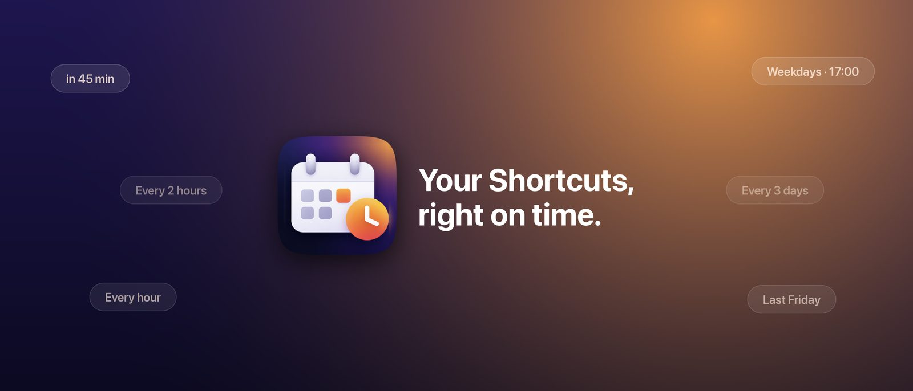

Cronlet
Run Shortcuts on a schedule.
Screenshots


Support & Setup →
How to set up the one automation, and how to reach us.
Privacy Policy →
Cronlet collects no data. Everything stays on your iPhone.
What is Cronlet?
Shortcuts can run things at a fixed time of day. Cronlet adds what's missing: intervals, one-off delays and time windows — "in 45 minutes", "every hour", "every 2 hours between 08:00 and 20:00 on weekdays" — with a clear list of what runs next.
Highlights
- Once, daily, or every 5 minutes to 12 hours — optionally within a time window
- Next run at a glance, pause/resume, Run Now, run history
- One Shortcuts automation runs every job — set it up once
- Shortcuts actions: Get Due Shortcut, Schedule Shortcut, Pause All Jobs
- No account, no server, no ads, no analytics — fully local